02как это работает
Система, а не диета
4 шага, пара часов у плиты — и три дня ты не думаешь о еде. Листай →
рационы с кбжу от нутрициолога
4 500+ участниц уже готовят
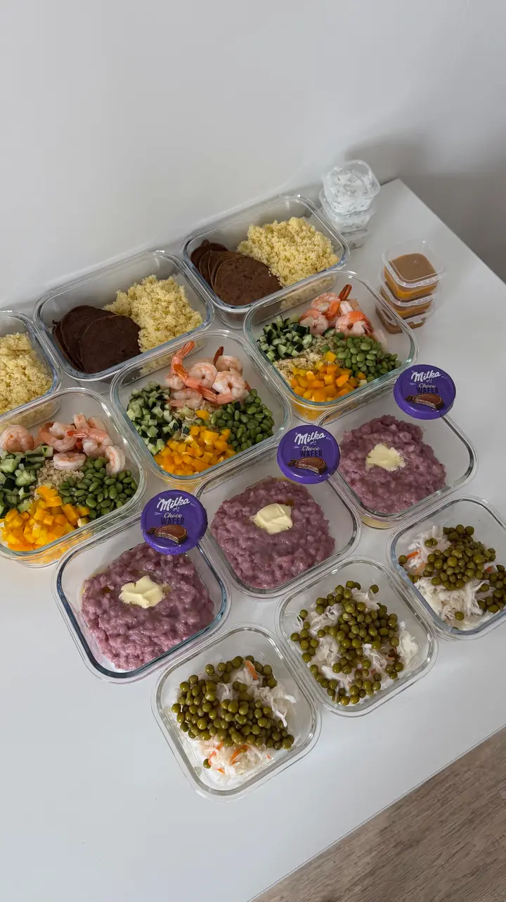

Готовые рационы с рассчитанным КБЖУ, списком покупок и видео. Готовишь 1,5–2 часа — и три дня ешь пасту, выпечку и десерты, оставаясь в дефиците.
в жизни и так много сложностей —
пусть хотя бы питание
будет проще.
кристина василиу, нутрициолог и автор «что поесть»
01знакомо?
Девять вечера. Ты открываешь холодильник 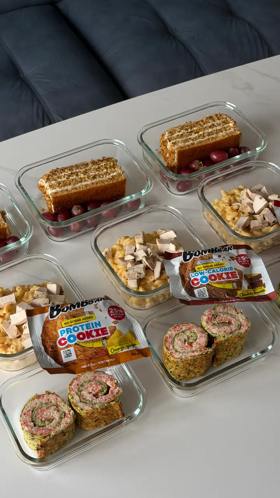 и снова не понимаешь, что приготовить. В сохранённых — триста рецептов,
и снова не понимаешь, что приготовить. В сохранённых — триста рецептов,
Каждый день решать «что поесть» — это ещё одна работа. Уставший мозг выбирает быстрое, а не полезное. Поэтому диеты и срываются: не из-за слабости, а из-за усталости от бесконечных решений.
Решение — закрыть вопрос еды один раз, сразу на три дня.
02как это работает
4 шага, пара часов у плиты — и три дня ты не думаешь о еде. Листай →

58+ готовых меню на 2–3 дня: завтраки, обеды, ужины и перекусы. Калорийность — от 1400 до 1800, под твою цель.

список покупок
Продуктовая корзина к рациону уже собрана: что купить и сколько. Без лишнего в чеке и забытого в магазине.

1,5–2 часа — и всё готово. Показываю, с чего начать и что готовить параллельно, чтобы не стоять у плиты весь вечер.

Граммовки уже посчитаны. Следующие три дня ты просто открываешь холодильник и ешь.
Минус вопрос «что поесть». Минус срывы. Минус килограммы.
хочу так же→03почему на этом худеют
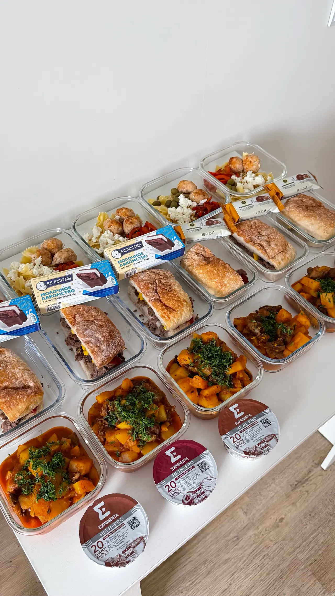
без весов на каждый приём пищи
КБЖУ и граммовки рассчитаны на каждое блюдо. Ты просто ешь свою порцию — дефицит складывается сам, без голода и подсчётов в приложении.
Twix — не срыв, а пункт меню
В рационах есть десерты и шоколадки. Когда сладкое разрешено и уже вписано в калории, его не хочется заедать тайком по вечерам.
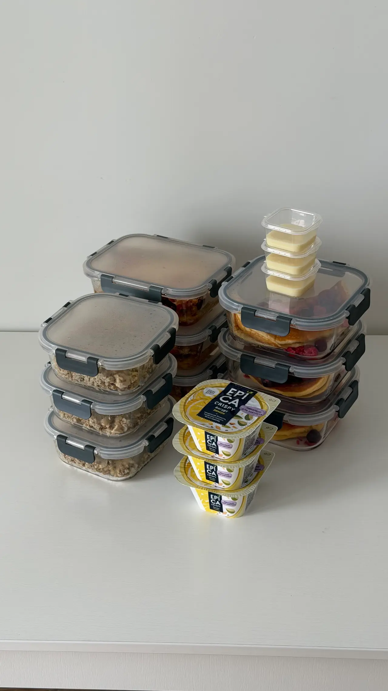
еда уже ждёт в холодильнике
Сила воли не тратится на выбор. Открыла контейнер, поела — и живёшь свою жизнь. Решение принято один раз, на три дня вперёд.
одни блюда — разные порции
Не нужно готовить себе «диетическое», а мужу нормальное. Все едят одно и то же, просто в своих граммах.
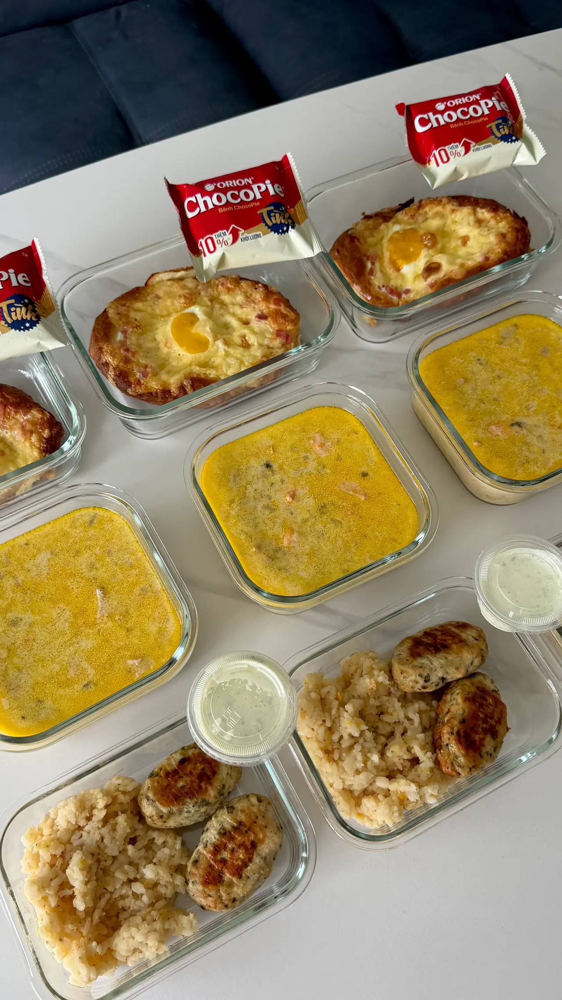
подстрой под себя
Рационы рассчитаны на 1400–1800 ккал в день, а для точной подстройки есть готовый промпт для пересчёта порций. Выбери калорийность и посмотри, как выглядит реальный рацион из канала.

1600ккал
В рационах: паста, пицца, хачапури, лазанья, супы, брауни, креветки, роллы с манго, перчики с рисом и шоколадки — а не грудка с гречкой.
04что внутри
Всё живёт в одном Telegram-канале: ищешь рацион по хэштегу калорийности — и готовишь.
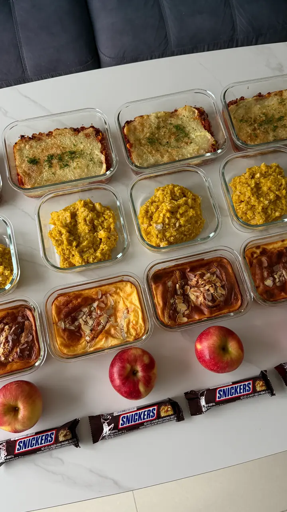
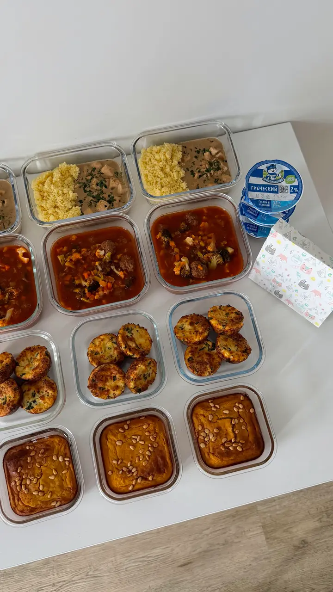
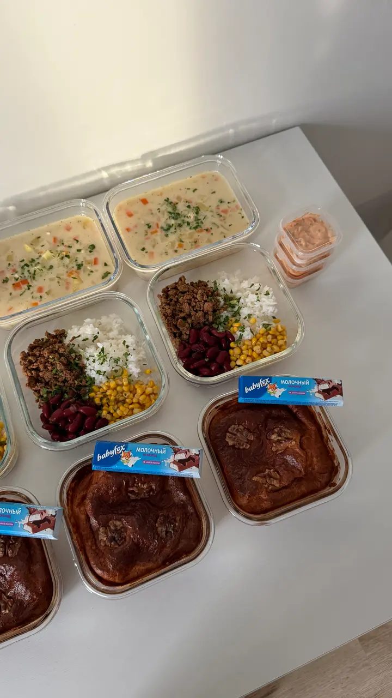
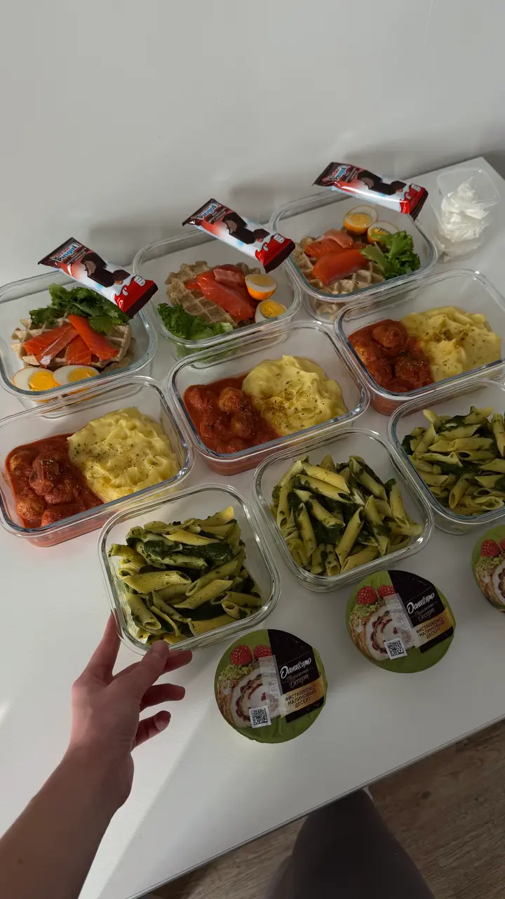

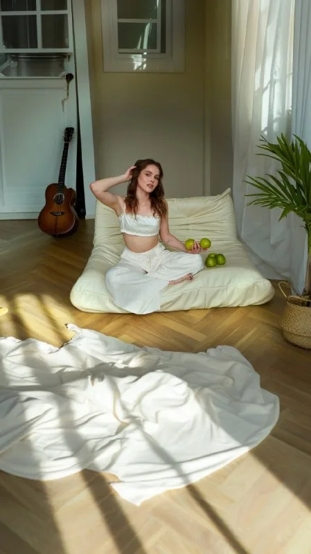
05кто я
и я сама прошла этот путьКогда-то я питалась хаотично и набрала лишнее. Скинула около 13 кг — не на гречке и запретах, а на нормальной вкусной еде. Потом выучилась на нутрициолога и собрала систему, по которой живу сама: готовлю раз на несколько дней и кормлю той же едой мужа.
Макс раньше вообще не готовил. Сейчас сам собирает рационы по моим видео — и минус 9 кг. Если получилось у него, получится у кого угодно :)
06отзывы
Первое актуальное в Instagram заполнилось сотней отзывов — пришлось завести второе. Вот несколько. Карточки можно двигать ↔

«Если будете повторять этот рецепт, не забудьте пристегнуть попу, иначе она неминуемо отлетит от того, как это вкусно!! 100 из 10»
Анастасия

«Мы с мужем с этой недели с вами. Высчитала себе 1700 ккал в день. Завтрак и ужин залетают на ура»
участница канала

«Приготовила перчики с рисом из 40 рациона, очень вкусноооо»
участница канала
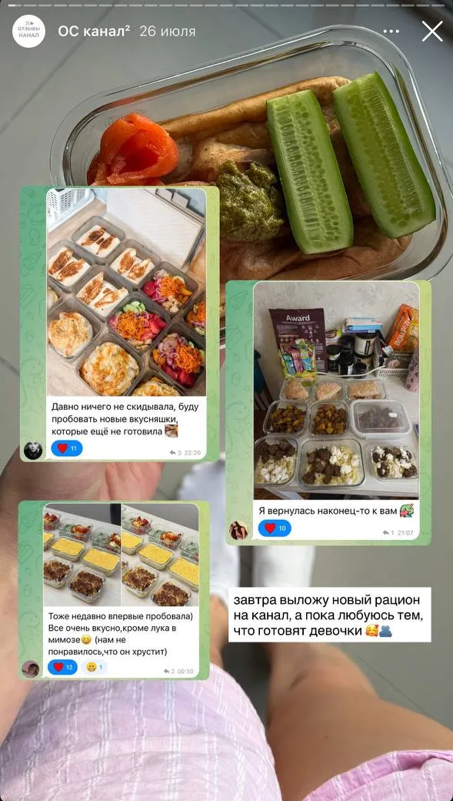
«Решила тоже скинуть свой сегодняшний. Недавно начала готовить рационы — это так удобно»
участница канала
«Самая лучшая покупка — подписка на этот канал 🙏»
Кристина К.
тарифы
В обоих тарифах — вся база рационов и рецептов. Оплата и доступ через Telegram-бота: ссылка на канал придёт сразу после оплаты.
на 3 месяца
1 190 ₽
каждые 3 месяца · автопродление
навсегда
1 790 ₽
один платёж · без продлений
Бот @VasKristiSub_Bot выдаёт доступ автоматически · меньше двух чашек кофе в месяц на тарифе «3 месяца»
07вопросы
Нет. Паста, пицца, выпечка, супы, десерты и даже шоколадки — всё уже вписано в КБЖУ. Для дефицита подбираешь калорийность и порции, а не убираешь любимую еду.
Да. Каждый рецепт показан на видео, а последовательность готовки расписана по шагам. Мой муж Макс раньше не готовил вообще — теперь сам готовит рационы на несколько дней.
В среднем 1,5–2 часа на рацион, которого хватает на 2–3 дня. Вместо того чтобы готовить каждый день.
Рационы рассчитаны на 1400–1800 ккал. Выбираешь ближайший к своей норме, а для точной подстройки в канале есть готовый промпт: он пересчитает порции под твои цифры.
Да. Готовишь одни блюда, а порции меняешь под каждого. Отдельно себе и мужу готовить не нужно.
Зависит от тарифа. «Навсегда» — разовый платёж, без списаний. «3 месяца» — подписка с автопродлением, отменить можно в любой момент в боте.
Бот @VasKristiSub_Bot автоматически пришлёт ссылку на закрытый канал сразу после оплаты.
Мы с Максом его делаем — с каталогом рационов, корзиной продуктов и пересчётом порций. Пока всё живёт в удобном Telegram-канале.